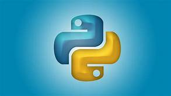
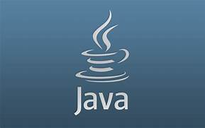

HTML MARKUP LANGUALE

Hypertext Markup Language (HTML) is a computer language that makes up most web pages and online applications. A hypertext is a
text that is used to reference other pieces of text, while a markup language is a series of markings that tells web servers the
style and structure of a document.
HTML is not considered a programming language as it can’t create dynamic functionality. Instead, with HTML, web users can create
and structure sections, paragraphs, and links using elements, tags, and attributes.
This article will go over the basics of HTML, including how it works, its pros and cons, and how it relates to CSS and JavaScript.
PYTHON PROGRAMMING LANGUAGE

Python is an interpreted, object-oriented, high-level programming language with dynamic semantics. Its high-level built in data
structures, combined with dynamic typing and dynamic binding, make it very attractive for Rapid Application Development, as well
as for use as a scripting or glue language to connect existing components together.
Python's simple, easy to learn syntax
emphasizes readability and therefore reduces the cost of program maintenance. Python supports modules and packages, which
encourages program modularity and code reuse.
The Python interpreter and the extensive standard library are available in source
or binary form without charge for all major platforms, and can be freely distributed.
JAVA SOFTWARE LANGUAGE

java is one of many high-level programming languages that use abstraction (reducing and factoring details) to create software
for computers and many other electronic devices. Compared to low-level programming languages, high-level programming
languages use a mixture of natural language (any language used by humans) and typical computer terms to create an easier to
understand and simpler form of programming.
Figures 1 and 2 show the difference in writing a simple program called “Hello
World” in Assembly (a low-level programming language) and in Java.java is excellent lamguagge..
Like human languages, programming languages have different levels of writing difficulty; some are easy to write, while others
require extensive computer knowledge to understand.